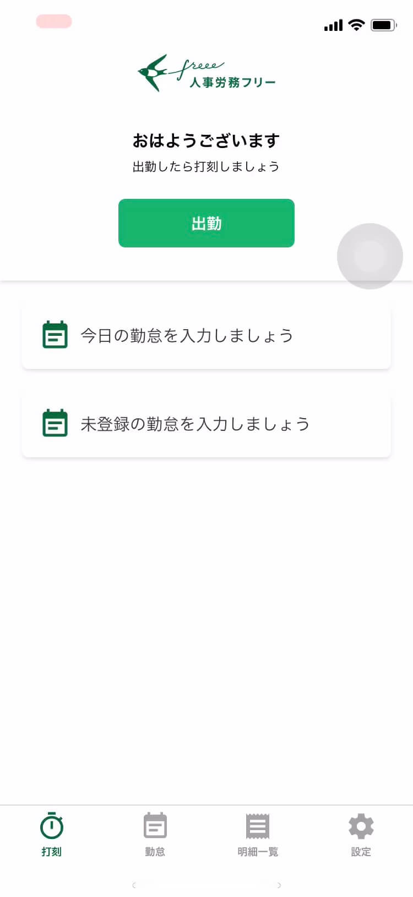
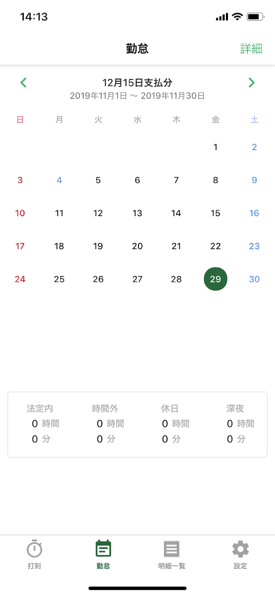
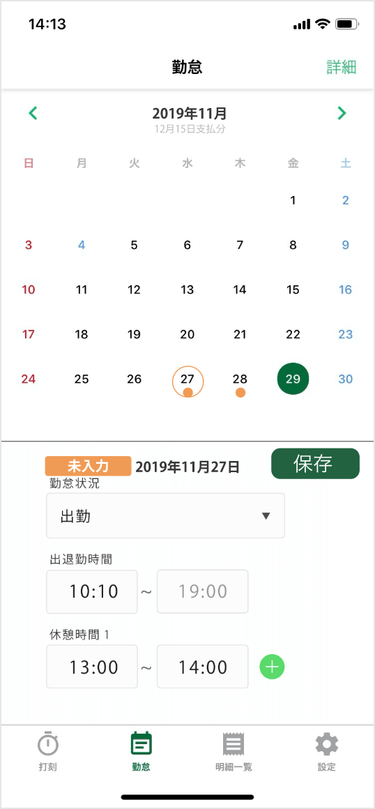

概要
freee株式会社の既存サービス「人事労務freee」を
・いまより入力が効率化されること
・いまより入力漏れや入力遅延が減ること
・その結果、正しくほぼリアルタイムに入力されるようになること
を目的とした改善案を検討しました。
使用ツール
XD
既存サービス
 
作成過程
実際に使用して見たところ入力漏れをした時の修正が複雑でわかりづらかったので、入力漏れの修正をわかりやすくするような改善案を考えました。
ワイヤー
・ホーム（打刻）画面に今週の未入力の勤怠があることを伝える
・カレンダー画面でいつ入力できていないのかをわかりやすく明示する
改善案

・入力漏れを気づかせるために、打刻の画面で、目立つように「記入漏れがあります」と表示した。
・勤怠の画面にいかなくても、打刻の画面で出勤時刻の修正ができるようにした。
・カレンダーを見て、入力できてない日が、ひとめで分かるようにした。
・入力できてない日があれば、フッターの勤怠の部分に、目立つようにオレンジの点で表示した
ユーザーテストととその後
ユーザーテストでは以下のような事象がありました。
・最初の出勤画面で手が止まる
・未入力のアラートに気を取られる
・打刻ができているのかわからなかった
・「未入力」のボタンをメッセージだと間違われて押してもらえなかった
・カレンダーを見て、未入力の日がわからない
・背景色など色による印象が薄い、読みづらい
・「保存」ボタンが押しづらい
・「保存」ボタンが押せているのかわからない
カレンダーを見て未入力の日がわからないことは、既に入力済みの表示がないことが原因と考えました。
そしてこれは、勤怠未記入だけでなく既に勤怠入力済みの印を追加することで改善されると考えました。
また、未登録のボタンが有ることで打刻ができていないのではないのかと思われたことは、打刻のフィードバックがないこと、未登録のボタンが打刻とセットに見えたことが原因だと考えました。
そしてこれは、現状だけを伝えているボタンの文言の変更（具体的には未登録の勤怠を入力する）や、未登録のお知らせはメッセージとして表示することで改善される。